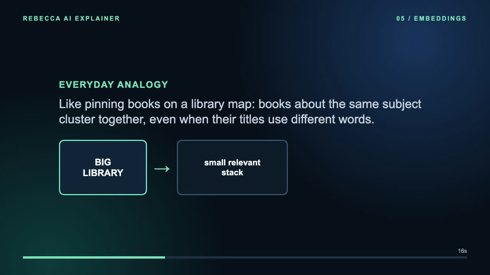

Embeddings turn text, images, or other content into vectors: lists of numbers that preserve useful relationships for comparison.
Topic detail
An embedding model maps an input to a point in a high-dimensional space. Inputs with similar meaning often land closer together, which lets an application search by intent even when the exact wording differs.
The vector does not contain a little answer sentence. It is a representation used by a later retrieval or ranking step.
Meaning becomes searchable when it has a location in vector space.
Why it matters
Keyword search can miss “after the vessel sails” when a policy says “post-departure.” Embeddings give a retrieval system another signal for recognizing that those phrases may be about the same situation.
For production work, chunk size, metadata filters, access control, model fit, and evaluation matter as much as the vector itself.
Sample
A user asks, “Can I cancel after the vessel sails?” The query and policy chunks are embedded separately. A nearby chunk about post-departure cancellation is selected because the meaning is related, even though it does not use the word “sails.”
Query vector [0.21, −0.08, 0.74, …]
Nearby chunk Post-departure cancellation
Similarity signal 0.91 cosine score
Easy analogy
Imagine a library map. Books about cooking, astronomy, and contracts occupy different neighborhoods. Two cooking books may use different titles but still sit close because their subject is related. An embedding does something similar for content, but the map is learned from data and has many more dimensions than we can visualize.

Dedicated illustration from the Embeddings explainer.
Video sample
Watch: Embeddings in practice
Key takeaway
Embeddings are representations, not answers. They make semantic similarity searchable; a downstream system still needs to retrieve, validate, and use the evidence.